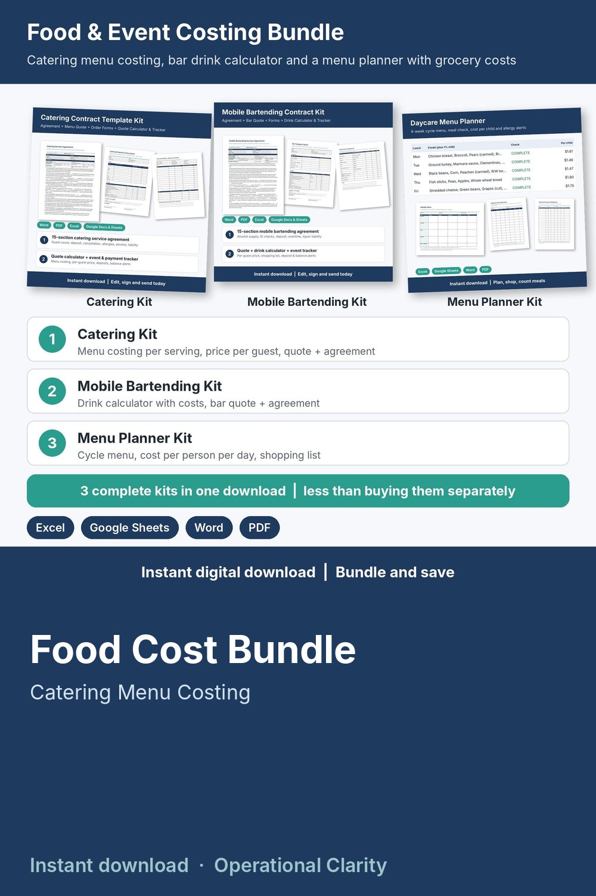

Food Cost Bundle

Know what every plate, drink and meal really costs: three complete food costing kits in one download, for less than buying them separately.
WHAT'S INSIDE
- Catering Kit:
* Catering Quote Calculator & Event Tracker (Excel / Google Sheets): menu costing per serving, quote builder with price per guest, food cost %, profit after overhead, deposits, balances and an event tracker
* Word + PDF: catering services agreement, proposal and menu quote with final count, inquiry form, event order (BEO) and checklist
- Mobile Bartending Kit:
* Mobile Bar Quote, Drink Calculator & Event Tracker (Excel / Google Sheets): how much beer, wine, spirits, ice and mixers to buy for your guest count and hours, with the cost of each, plus quote, deposit and profit
* Word + PDF: bartending services agreement, bar package quote, shopping list and event checklist
- Menu Planner Kit:
* Menu Planner & Meal Count (Excel / Google Sheets): cycle menu with food costs, cost per person per day, one-click shopping list with estimated cost, meal counts and grocery spend vs plan
* Word + PDF: weekly menu and monthly calendar, allergy chart and grocery list, meal count and food production record
- START HERE guide for the bundle and for each kit (PDF)
HOW IT WORKS
1. Type your ingredient, drink and grocery prices once.
2. Build a menu, a quote or a weekly plan.
3. Cost per serving, price per guest, food cost %, shopping list totals and profit calculate for you.
Example data shows how everything connects; delete it and type your own. Yellow cells = type here, green cells = calculated.
FORMATS
- Excel .xlsx (works in Excel and Google Sheets)
- Word .docx (edit in Word, Google Docs, Pages or LibreOffice) + PDF, US Letter
This is an instant digital download, no physical item will be shipped.
Editable templates, not legal advice: have agreements reviewed by a local attorney. Check menus against your local food program and health code rules.